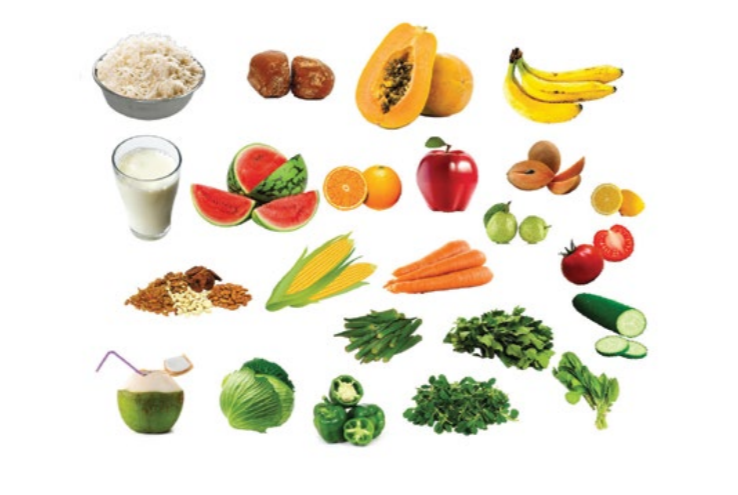

YOGIC DIET FOR ADOLESCENT

Well balanced nutritious diet consisting lot of soup, salad, fruits,
fruit juices, which will provide all the essential nutrition to
strengthen the muscles and improve vital strength of the body. Such a
diet should be rich in all essential vitamin, mineral, antioxidants.
It prevents constipation prepare body to fight diseases and improve
the body immunity.
Following are the food items generally prescribed for
growing children:
1. Vegetables: All green leafy vegetables, Ash gourd, Ridge
gourd, Apple gourd, Beet root, Turnip, Carrot, Cucumber, Spinach,
Tomato etc.
2. Cereals: Unpolished rice, Whole wheat and multi-grain
flour.
3. Sweet: Honey, Organic natural Jaggery.
4. Sprouts: Green gram, Bengal gram, Wheat, Alfalfa,
Groundnut, Fenugreek.
5. Dry fruits: Dates, Figs, Dry grapes, Cashew, Almonds,
Walnut, Dry grapes (soaked overnight).
6. Fresh fruits: Ripened, Seasonal and juicy fruits like
Guava,Pear, Apple, Banana,Sapota, Orange, Sweet orange.
7. Fruit juice: Apple juice, Carrot juice and Orange juice.
8. Soups: Spinach, Carrot, Tomato, Beetroot and
Coriandereither all mixed or can beprepared separately.
9. Others: Lemon water, Butter milk, Tender coconut water
etc.
10. Increase water intake up to 3-4 liters per day.
11. Avoid excess Tea, Coffee, Sugar/candy, refined white
flour.